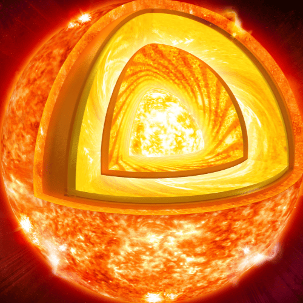

An In-Depth Look at the Solar System and its Components. Learn all about the major objects in our solar system, including planets, moons, the Sun, and smaller bodies like asteroids and comets. - Aarav Pininti DJHS 2026
Overview of Our Solar System
Our solar system is a gravitationally bound system consisting of the Sun and all the objects that orbit around it. Located in the Milky Way galaxy, this cosmic neighborhood formed approximately 4.6 billion years ago from the gravitational collapse of a giant molecular cloud. The Sun, containing 99.86% of the system's mass, dominates the center while planets, moons, asteroids, comets, and dust particles dance in their eternal orbits. The solar system extends far beyond the planets we know, reaching into the distant Kuiper Belt and Oort Cloud, where countless icy bodies await discovery.
Solar System Statistics
Age: 4.6 billion years
Number of Planets: 8
Number of Dwarf Planets: 5 officially recognized
Total Known Moons: Over 200
Distance to Nearest Star: 4.24 light-years (Proxima Centauri)
Solar System Diameter: ~100,000 AU (including Oort Cloud)
Asteroid Belt Objects: Over 1 million
Sun's Temperature: 5,778 K (surface), 15 million K (core)
Exploring Our Cosmic Neighborhood
The solar system is home to an incredible diversity of celestial objects, each with unique characteristics and stories to tell. From the scorching surface of Mercury to the icy plains of Neptune, the eight planets showcase the varied environments that can exist in our cosmic backyard. Beyond the planets, we find fascinating dwarf planets like Pluto and Eris, countless moons with their own geological wonders, and the mysterious small bodies that hold clues to our system's formation. Join us on this educational journey as we explore the Sun that powers our system, the planets that captivate our imagination, and the distant objects that expand our understanding of the universe.
The Sun
Our Star
Sun Statistics
Diameter: 1.39 million kilometers (109 times Earth's diameter)
Mass: 1.989 × 10³⁰ kg (99.86% of Solar System's mass)
Surface Temperature: 5,778 K (5,505°C)
Core Temperature: 15 million°C
Age: ~4.6 billion years
Composition: 73% Hydrogen, 25% Helium, 2% Heavier Elements
Distance from Earth: 149.6 million kilometers (1 AU)
Luminosity: 3.828 × 10²⁶ watts
Rotation Period: 27 days (at equator)
Solar Wind Speed: 400-800 km/s
The Sun's Layers

The Sun's interior consists of distinct layers: the core where nuclear fusion occurs, the radiative zone where energy slowly travels outward, the convective zone with rising hot plasma, the photosphere (visible surface), the chromosphere, and the corona extending into space. Each layer has unique temperatures, pressures, and characteristics that contribute to the Sun's incredible energy output.
Solar Activity and Magnetic Phenomena
The Sun is far from a static object—it's a dynamic, magnetically active star that experiences regular cycles of activity. The solar cycle, lasting approximately 11 years, sees the Sun's magnetic field completely flip, creating periods of high and low solar activity. During active periods, the Sun produces solar flares, coronal mass ejections, and prominences that can affect Earth's magnetic field and satellite communications. Sunspots, dark regions on the Sun's surface, indicate areas of intense magnetic activity and serve as visible markers of the solar cycle. The Sun's magnetic field extends throughout the solar system, creating the heliosphere—a bubble of solar wind that protects us from most cosmic radiation.
The Sun's Role in the Solar System
As the central star of our solar system, the Sun plays multiple crucial roles that make life on Earth possible. Its gravitational influence keeps all planets, asteroids, and comets in stable orbits, while its energy output drives weather patterns, ocean currents, and the water cycle on Earth. The Sun's radiation provides the energy that powers photosynthesis, forming the foundation of virtually all life on our planet. Beyond Earth, the Sun's influence extends to the edge of the solar system through the solar wind—a stream of charged particles that creates the heliosphere. This stellar wind also interacts with planetary magnetospheres, creating beautiful auroras on planets like Earth and Jupiter. The Sun's lifecycle will ultimately determine the fate of our entire solar system over billions of years.
Planets & Moons
The Eight Planets
Mercury
The smallest and innermost planet in the Solar System.
Statistics
Orbital Period: 88 Earth days
Surface Temperature: -173°C to 427°C
No moons or rings
Physical Characteristics and Surface
Mercury is the smallest planet in our solar system and has a heavily cratered surface similar to Earth's Moon.
Composition and Internal Layers
Mercury has a large iron core that makes up about 75% of the planet's radius, surrounded by a thin silicate mantle and crust.
Facts and Space Exploration
Mercury has been visited by two spacecraft: Mariner 10 and MESSENGER, which provided detailed maps and data about this mysterious planet.
Everything Beyond
Dwarf Planets
Pluto
The most famous dwarf planet, formerly the ninth planet.
Statistics
Orbital Period: 248 Earth years
Surface Temperature: -375°F to -400°F
Moons: 5 known
Physical Characteristics and Surface
Pluto is a complex world with a heart-shaped region called Tombaugh Regio, nitrogen plains, methane glaciers, and a thin atmosphere. Its surface shows evidence of geological activity despite its small size and distance from the Sun.
Composition and Internal Layers
Pluto has a rocky core surrounded by a mantle of water ice, with a surface composed of frozen nitrogen, methane, and carbon monoxide. Its density suggests it is about 70% rock and 30% ice.
Moons and System
Pluto has five known moons: Charon (the largest), Nix, Hydra, Styx, and Kerberos. Charon is so large relative to Pluto that they form a binary system, orbiting around a common center of mass between them.
Statistics
Known Asteroids: Over 1.3 million
Known Comets: Over 4,000
Largest Asteroid: Ceres (940 km diameter)
Most Famous Comet: Halley's Comet (76-year period)
Near-Earth Asteroids: Over 34,000 discovered
Asteroid Belt Mass: 4% of Moon's mass
Average Comet Nucleus: 1-50 km diameter
Asteroid Composition: 75% C-type, 17% S-type, 8% others
Composition and Structure
Asteroids are rocky, metallic, or icy remnants from the early solar system, primarily composed of silicates, metals (iron and nickel), and carbon compounds. Most asteroids are irregularly shaped due to their low gravity, preventing them from becoming spherical. Comets are "dirty snowballs" composed of water ice, frozen gases (methane, ammonia, carbon dioxide), dust, and rocky material. When approaching the Sun, comets develop their characteristic coma (atmosphere) and tail as solar radiation vaporizes their icy surface, creating spectacular displays visible from Earth.
Famous Discoveries and Historical Significance
The first asteroid, Ceres, was discovered in 1801 by Giuseppe Piazzi, followed by Pallas, Juno, and Vesta. Halley's Comet, first recorded by Chinese astronomers in 240 BCE, became the first comet with a calculated orbit thanks to Edmond Halley in 1705. The Chicxulub impactor, likely an asteroid, caused the mass extinction event 66 million years ago that ended the dinosaurs. Modern discoveries include asteroid Apophis, which will make a close approach to Earth in 2029, and interstellar visitors like ʻOumuamua and 2I/Borisov, the first confirmed objects from beyond our solar system.
Scientific and Material Significance and Potential Threats
Asteroids and comets are time capsules from the early solar system, preserving materials from 4.6 billion years ago that help scientists understand planetary formation. They likely delivered water and organic compounds to early Earth, potentially contributing to the origin of life. Some asteroids contain valuable metals like platinum, gold, and rare earth elements, making them targets for future mining missions. However, they also pose potential threats - Near-Earth Objects (NEOs) larger than 140 meters could cause regional devastation, while kilometer-sized objects could trigger global catastrophes. Space agencies actively track these objects, and missions like NASA's DART have successfully demonstrated asteroid deflection techniques for planetary defense.
Asteroid Belt Statistics
Location: 2.2 to 3.2 AU from Sun
Total Objects: Over 1 million known
Total Mass: 4% of Moon's mass
Largest Object: Ceres (940 km diameter)
Average Distance Between Objects: 1 million km
Orbital Period Range: 3-6 years
Temperature Range: -73°C to -108°C
Main Asteroid Types: C-type (75%), S-type (17%), M-type (8%)
Asteroid Belt Structure and Major Objects
The asteroid belt is a torus-shaped region between Mars and Jupiter containing numerous irregularly shaped bodies. Despite popular depictions, it's mostly empty space with objects separated by millions of kilometers. The belt is divided into inner, middle, and outer regions, with distinct families of asteroids sharing similar orbits. Major objects include Ceres (dwarf planet), Vesta (second most massive), Pallas (third largest), and Hygiea (fourth largest). The belt contains Kirkwood gaps - regions cleared by Jupiter's gravitational resonances. Most asteroids are C-type (carbonaceous), S-type (silicate), or M-type (metallic), representing different formation conditions in the early solar system.
Kuiper Belt Statistics
Location: 30 to 50 AU from Sun
Known Objects: Over 3,000
Estimated Total Objects: Over 100,000 (>100 km diameter)
Total Mass: 1/10th of Earth's mass
Temperature: -220°C to -230°C
Largest Objects: Pluto, Eris, Makemake, Haumea
Orbital Periods: 200-500+ years
Primary Composition: Water ice, methane, ammonia
Kuiper Belt Structure and Major Objects
The Kuiper Belt is a doughnut-shaped region of icy bodies beyond Neptune, similar to the asteroid belt but 20 times wider and 200 times more massive. It's divided into the classical belt (40-48 AU) and scattered disk objects with highly elliptical orbits. Major dwarf planets include Pluto (most famous), Eris (most massive), Makemake (reddish surface), and Haumea (elongated, fast-rotating). The belt is the source of short-period comets and contains pristine materials from the solar system's formation. Objects are classified as classical KBOs, resonant objects (like Pluto in 3:2 resonance with Neptune), and scattered disk objects. New Horizons' flyby of Pluto and Arrokoth provided unprecedented details about these distant, ancient worlds.
The Oort Cloud
The Oort Cloud is a theoretical spherical shell of icy objects surrounding the solar system, extending from about 2,000 to 100,000 AU from the Sun (nearly halfway to the nearest star). Named after Dutch astronomer Jan Oort, this region contains trillions of comets and icy bodies, representing the solar system's most distant gravitationally bound objects. The cloud is divided into the inner Oort cloud (Hills cloud, 2,000-20,000 AU) and outer Oort cloud (20,000-100,000 AU). These objects are so distant that they take millions of years to orbit the Sun, and their orbits can be easily perturbed by passing stars, giant molecular clouds, or galactic tides, occasionally sending comets toward the inner solar system as long-period comets.
Major Oort Cloud Objects Including Sedna
While no objects have been confirmed to originate from the Oort Cloud, several extreme trans-Neptunian objects like Sedna provide clues about this distant region. Sedna, discovered in 2003, has a highly elliptical orbit ranging from 76 to 937 AU, taking about 11,400 years to complete one orbit. Its extreme distance and orbital characteristics suggest it may be an inner Oort Cloud object or represent a transitional population between the Kuiper Belt and Oort Cloud. Other similar objects include 2012 VP113 and Goblin (2015 TG387), which have detached orbits that never bring them close to the giant planets, suggesting they originated from the same population as Sedna and may represent the inner edge of the Oort Cloud.
Interstellar Visitors: ʻOumuamua, Borisov, and Beyond
In 2017, ʻOumuamua became the first confirmed interstellar object to visit our solar system, displaying unusual characteristics including its elongated shape, reddish color, and mysterious acceleration away from the Sun. In 2019, comet 2I/Borisov became the second confirmed interstellar visitor, displaying more typical comet behavior with a visible coma and tail. These objects provide unique opportunities to study material from other star systems without leaving our own. Their discoveries have revolutionized our understanding of interstellar space and suggest that such visitors may be more common than previously thought. Future surveys like the Vera Rubin Observatory are expected to discover many more interstellar objects, opening new windows into the composition and dynamics of other planetary systems.
The Solar System's Edge and Beyond
The boundary of our solar system is defined by the heliopause, where the solar wind meets the interstellar medium at about 120 AU from the Sun. The Voyager spacecraft have crossed this boundary, with Voyager 1 entering interstellar space in 2012 and Voyager 2 in 2018. Beyond the Oort Cloud lies true interstellar space, filled with gas, dust, cosmic rays, and magnetic fields from other stars. The nearest star system, Alpha Centauri, lies 4.24 light-years away, containing potentially habitable exoplanets. Understanding our solar system's edge helps us comprehend how it interacts with the galaxy and what conditions spacecraft will encounter on interstellar missions. Projects like Breakthrough Starshot aim to send tiny probes to nearby star systems, while future missions may explore the outer reaches of the Oort Cloud to better understand our cosmic neighborhood's true extent.